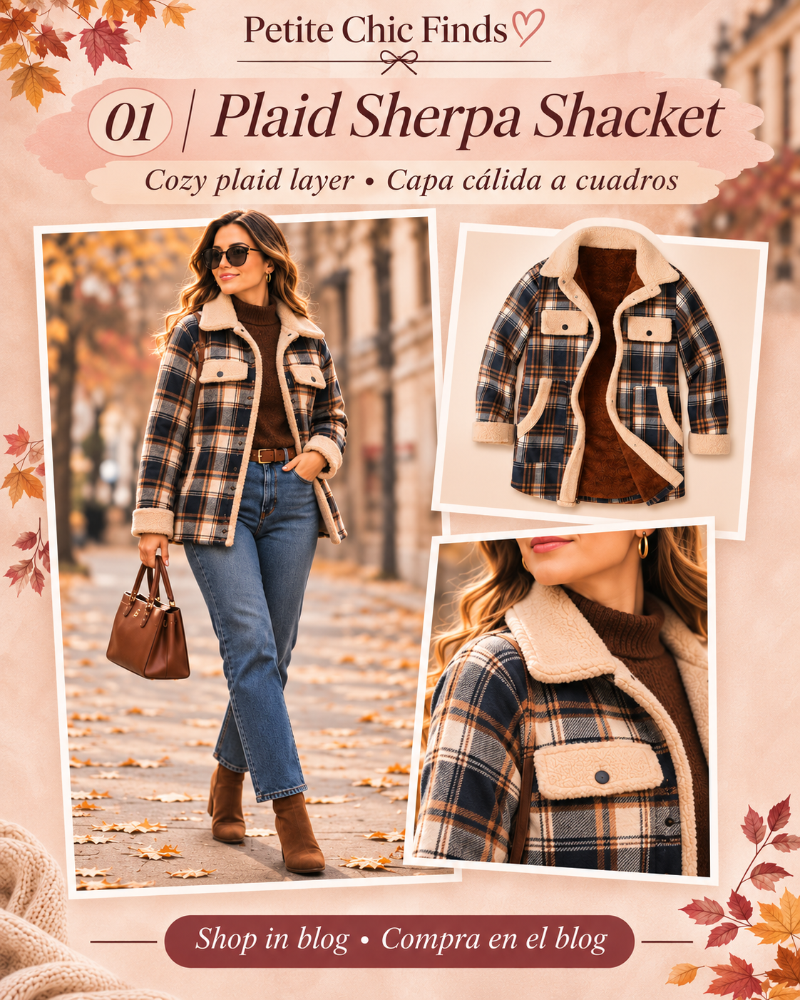

Finding the right jacket or coat can bring an entire winter outfit together. Explore five curated styles, from relaxed plaid layers to timeless camel outerwear, with simple outfit ideas for petite women.
La chaqueta o el abrigo adecuado puede transformar un look de invierno. Descubre cinco estilos seleccionados, desde una chaqueta de cuadros hasta un clásico abrigo camel, con ideas fáciles para mujeres petite.
01

ZEAGOO
Plaid Sherpa Shacket
Chaqueta de cuadros con sherpa
A cozy plaid layer for casual winter looks. Style with straight-leg jeans, a simple knit and ankle boots.
Una capa de cuadros acogedora para looks casuales. Combínala con jeans rectos, un suéter sencillo y botines.
Pay attention to shoulder fit, coat length and the balance between layers. High-waisted bottoms and simple styling can help create a cohesive silhouette.
Presta atención al ajuste de los hombros, al largo del abrigo y al equilibrio de las capas. Las prendas de cintura alta y las combinaciones sencillas ayudan a crear una silueta armoniosa.